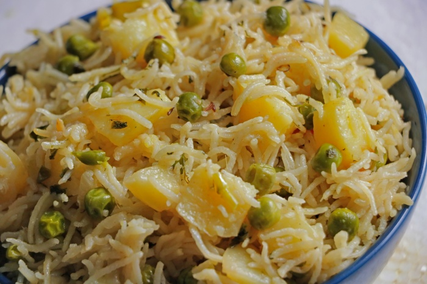

Mutar Pilao
This easy peas pulao is a vegan and gluten-free dish that’s great to enjoy as a light meal or hearty
side. Matar pulao features rice and tasty peas with onions and aromatic
spices and can be prepared entirely in a pressure cooker or in a pan on a stovetop. I share
three ways to make this delish matar pulao – stovetop pressure cooker method with stepwise photos,
while the pan and Instant pot method with detailed instructions.
Ingredients
- 2 cups basmati rice
- 2 tbsp ghee
- 1 tbsp cumin seeds
- 1 tbsp shredded ginger
- 2 cups shelled peas
- 2 tsp coriandar powder
- 1 tsp garam masala
- salt to taste
- 1 tsp turmeric powder
- Water
Instructions
- Wash the basmati rice well.
- Soak it in warm water for an hour.
- Strain the rice and set aside.
- Heat the ghee in a heavy pen,and fry the cumin seeds in ginger
- Add the peas,garam masala,salt,turmeric and rice and stir well.
- Saute for about a minute.
- Pour and sour cups of water,and allow it to boil.
- Then ,lower the flame and allow the mixture to simmer.